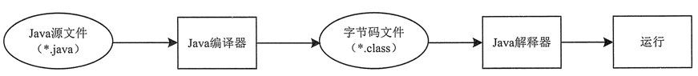

首页 > Java教程 > Java入门基础及环境搭建
Java程序的运行过程（执行流程）分析
万事知其然，要知其所以然，所以本节带大家来详细了解一下 Java 程序的执行过程。
从《使用记事本编写运行Java程序》一节的案例可以看出，Java 程序的运行必须经过编写、编译和运行 3 个步骤。
Java 程序运行流程如图 1 所示。
字节码文件是一种和任何具体机器环境及操作系统环境无关的中间代码。它是一种二进制文件，是 Java 源文件由 Java 编译器编译后生成的目标代码文件。编程人员和计算机都无法直接读懂字节码文件，它必须由专用的 Java 解释器来解释执行，因此 Java 是一种在编译基础上进行解释运行的语言。
Java 解释器负责将字节码文件翻译成具体硬件环境和操作系统平台下的机器代码，以便执行。因此 Java 程序不能直接运行在现有的操作系统平台上，它必须运行在被称为 Java 虚拟机的软件平台之上。
Java 虚拟机（JVM）是运行 Java 程序的软件环境，Java 解释器是 Java 虚拟机的一部分。在运行 Java 程序时，首先会启动 JVM，然后由它来负责解释执行 Java 的字节码程序，并且 Java 字节码程序只能运行于 JVM 之上。这样利用 JVM 就可以把 Java 字节码程序和具体的硬件平台以及操作系统环境分隔开来，只要在不同的计算机上安装了针对特定平台的 JVM，Java 程序就可以运行，而不用考虑当前具体的硬件平台及操作系统环境，也不用考虑字节码文件是在何种平台上生成的。
JVM 把这种不同软、硬件平台的具体差别隐藏起来，从而实现了真正的二进制代码级的跨平台移植。JVM 是 Java 平台架构的基础，Java 的跨平台特性正是通过在 JVM 中运行 Java 程序实现的。Java 的这种运行机制可以通过图 2 来说明。

图 2 JVM工作方式
Java 语言这种“一次编写，到处运行”的方式，有效地解决了目前大多数高级程序设计语言需要针对不同系统来编译产生不同机器代码的问题，即硬件环境和操作平台的异构问题，大大降低了程序开发、维护和管理的开销。
提示：Java 程序通过 JVM 可以实现跨平台特性，但 JVM 是不跨平台的。也就是说，不同操作系统之上的 JVM 是不同的，Windows 平台之上的 JVM 不能用在 Linux 平台，反之亦然。
从《使用记事本编写运行Java程序》一节的案例可以看出，Java 程序的运行必须经过编写、编译和运行 3 个步骤。
- 编写：是指在 Java 开发环境中进行程序代码的输入，最终形成后缀名为 .java 的 Java 源文件。
- 编译：是指使用 Java 编译器对源文件进行错误排査的过程，编译后将生成后缀名为 .class 的字节码文件，不像C语言那样生成可执行文件。
- 运行：是指使用 Java 解释器将字节码文件翻译成机器代码，执行并显示结果。
Java 程序运行流程如图 1 所示。

图 1 Java程序运行流程
图 1 Java程序运行流程
字节码文件是一种和任何具体机器环境及操作系统环境无关的中间代码。它是一种二进制文件，是 Java 源文件由 Java 编译器编译后生成的目标代码文件。编程人员和计算机都无法直接读懂字节码文件，它必须由专用的 Java 解释器来解释执行，因此 Java 是一种在编译基础上进行解释运行的语言。
Java 解释器负责将字节码文件翻译成具体硬件环境和操作系统平台下的机器代码，以便执行。因此 Java 程序不能直接运行在现有的操作系统平台上，它必须运行在被称为 Java 虚拟机的软件平台之上。
Java 虚拟机（JVM）是运行 Java 程序的软件环境，Java 解释器是 Java 虚拟机的一部分。在运行 Java 程序时，首先会启动 JVM，然后由它来负责解释执行 Java 的字节码程序，并且 Java 字节码程序只能运行于 JVM 之上。这样利用 JVM 就可以把 Java 字节码程序和具体的硬件平台以及操作系统环境分隔开来，只要在不同的计算机上安装了针对特定平台的 JVM，Java 程序就可以运行，而不用考虑当前具体的硬件平台及操作系统环境，也不用考虑字节码文件是在何种平台上生成的。
JVM 把这种不同软、硬件平台的具体差别隐藏起来，从而实现了真正的二进制代码级的跨平台移植。JVM 是 Java 平台架构的基础，Java 的跨平台特性正是通过在 JVM 中运行 Java 程序实现的。Java 的这种运行机制可以通过图 2 来说明。
图 2 JVM工作方式
Java 语言这种“一次编写，到处运行”的方式，有效地解决了目前大多数高级程序设计语言需要针对不同系统来编译产生不同机器代码的问题，即硬件环境和操作平台的异构问题，大大降低了程序开发、维护和管理的开销。
提示：Java 程序通过 JVM 可以实现跨平台特性，但 JVM 是不跨平台的。也就是说，不同操作系统之上的 JVM 是不同的，Windows 平台之上的 JVM 不能用在 Linux 平台，反之亦然。
关注公众号「站长严长生」，在手机上阅读所有教程，随时随地都能学习。内含一款搜索神器，免费下载全网书籍和视频。

微信扫码关注公众号